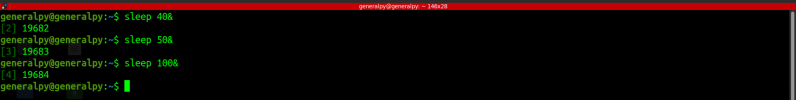
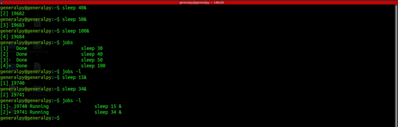
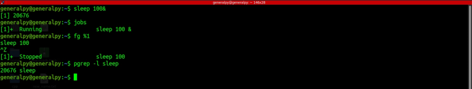
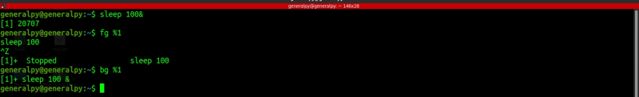
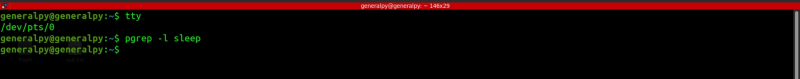

Every background process has a job id associated with it. This job id is local to the terminal session and multiple sessions can have same job ids.

Note the numbers highlighted(in dark green) are job id. Process id is also listed and it is public, managed by system kernel.
We can use jobs command to know current jobs.

Use -l flag to get process id also in jobs output. jobs also shows status of the job.
To bring any job to foreground , use fg command to bring it to foreground.
fg %jobid
We can then bring a process to background again by pressing ctrl + z. The process is not terminated it is just suspended as we can see that it is still available in process list.
To resume an process in background, use bg command. Its syntax is same as fg.

What happens if terminal running process is closed or remote login is logged out? A SIGHUP(hang up) command is sent to the process, which will cause that process to hang up and ultimately it will be terminated. Note that for daemons SIGHUP means reload config as they have no terminals attached to them.
To prevent any command from receiving HUP signal, use nohup command.
nohup command &

Note how the sleep process is terminated. Lets use nohup.
If terminal is closed, the process is adopted by systemd or init process.
Output of nohup's command execution is added into file nohup.out which is created in current working dir or in user home dir if permissions are not available for current working directory.